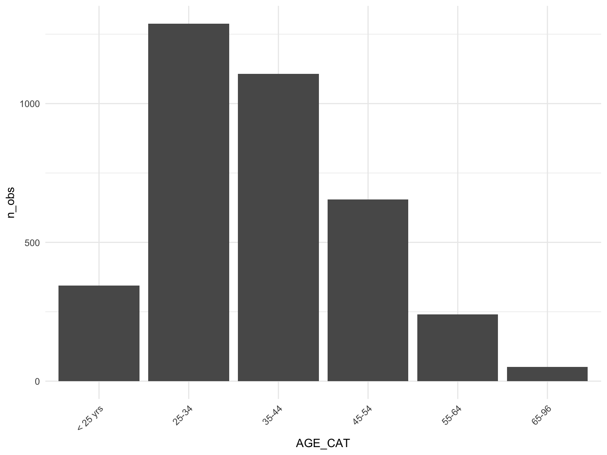
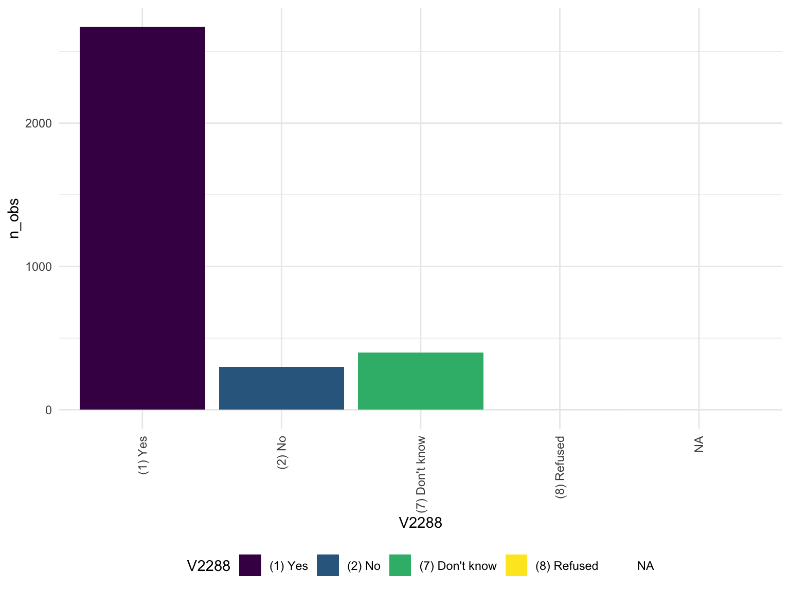

Demographics
Federal
#Interview outcome
da04572.0001 %>%
count(V0003) %>%
rename("Interview Outcome"= V0003) %>%
knitr::kable()
| (201) Complete - regular |
3615 |
| (203) Sufficient partial interview - no further
follow-up possible |
71 |
#Sex
da04572.0001 %>%
count(V0004) %>%
rename("Sex" = V0004) %>%
knitr::kable()
| (1) Male |
2728 |
| (2) Female |
958 |
#US Citizen
da04572.0001%>%
count(V0051) %>%
rename("US Citizen" = V0051) %>%
knitr::kable()
| (1) Yes |
635 |
| (2) No |
118 |
| (7) Don’t know |
4 |
| NA |
2929 |
#HIGHEST EDUCATION BEFORE ARREST
da04572.0001%>%
count(EDUCATION) %>%
rename("Highest Education Prior to Arrest" = EDUCATION) %>%
knitr::kable()
| (0000000) Never attended or attended kindergarten
only |
15 |
| (0000001) First grade |
11 |
| (0000002) Second grade |
12 |
| (0000003) Third grade |
15 |
| (0000004) Fourth grade |
21 |
| (0000005) Fifth grade |
25 |
| (0000006) Sixth grade |
86 |
| (0000007) Seventh grade |
66 |
| (0000008) Eighth grade |
170 |
| (0000009) Ninth grade |
330 |
| (0000010) Tenth grade |
439 |
| (0000011) Eleventh grade |
508 |
| (0000012) Twelfth grade |
912 |
| (0000013) College freshman |
214 |
| (0000014) College sophomore |
324 |
| (0000015) College junior |
96 |
| (0000016) College senior |
195 |
| (0000017) Graduate school one year |
35 |
| (0000018) Graduate school two or more years |
132 |
| (0000019) Attended school in other country/system not
comparable to grades |
35 |
| (9999997) Don’t know |
8 |
| (9999998) Refused |
12 |
| (9999999) Missing |
25 |
#Age Category
federal_df %>%
group_by(AGE_CAT) %>%
summarise(
n_obs = n()
) %>%
mutate(
AGE_CAT = gsub(".*)", "", AGE_CAT)
) %>%
ungroup() %>%
ggplot(aes(x = AGE_CAT, y = n_obs)) +
geom_bar(stat = "identity") +
theme(axis.text.x = element_text(angle = 45, hjust = 1))

State
#Interview outcome
da04572.0002 %>%
count(V0003) %>%
rename("Interview Outcome"= V0003) %>%
knitr::kable()
| (201) Complete - regular |
14321 |
| (203) Sufficient partial interview - no further
follow-up possible |
178 |
#Sex
da04572.0002 %>%
count(V0004) %>%
rename("Sex" = V0004) %>%
knitr::kable()
| (1) Male |
11569 |
| (2) Female |
2930 |
#US Citizen
da04572.0002 %>%
count(V0051) %>%
rename("US Citizen" = V0051) %>%
knitr::kable()
| (1) Yes |
851 |
| (2) No |
213 |
| (7) Don’t know |
10 |
| (8) Refused |
1 |
| NA |
13424 |
#HIGHEST EDUCATION BEFORE ARREST
da04572.0002 %>%
count(EDUCATION) %>%
rename("Highest Education Prior to Arrest" = EDUCATION) %>%
knitr::kable()
| (0000000) Never attended or attended kindergarten
only |
41 |
| (0000001) First grade |
32 |
| (0000002) Second grade |
19 |
| (0000003) Third grade |
54 |
| (0000004) Fourth grade |
50 |
| (0000005) Fifth grade |
74 |
| (0000006) Sixth grade |
234 |
| (0000007) Seventh grade |
341 |
| (0000008) Eighth grade |
856 |
| (0000009) Ninth grade |
1754 |
| (0000010) Tenth grade |
2424 |
| (0000011) Eleventh grade |
2781 |
| (0000012) Twelfth grade |
3598 |
| (0000013) College freshman |
586 |
| (0000014) College sophomore |
788 |
| (0000015) College junior |
192 |
| (0000016) College senior |
313 |
| (0000017) Graduate school one year |
50 |
| (0000018) Graduate school two or more years |
140 |
| (0000019) Attended school in other country/system not
comparable to grades |
45 |
| (9999997) Don’t know |
24 |
| (9999998) Refused |
44 |
| (9999999) Missing |
59 |
#Age Category
state_df %>%
group_by(AGE_CAT) %>%
summarise(
n_obs = n()
) %>%
mutate(
AGE_CAT = gsub(".*)", "", AGE_CAT)
) %>%
ungroup() %>%
ggplot(aes(x = AGE_CAT, y = n_obs)) +
geom_bar(stat = "identity") +
theme(axis.text.x = element_text(angle = 45, hjust = 1))
HIV
#HIV tested
federal_df %>%
group_by(V2288) %>%
summarize(n_obs = n()) %>%
knitr:: kable()
| (1) Yes |
2673 |
| (2) No |
298 |
| (7) Don’t know |
398 |
| (8) Refused |
1 |
| NA |
316 |
federal_df %>%
group_by( V2288) %>%
summarize(n_obs = n()) %>%
ungroup() %>%
ggplot(aes(x = V2288, y = n_obs, fill = V2288)) +
theme(axis.text.x = element_text(angle = 90, vjust = .5, hjust = 1)) +
geom_bar(stat = "identity")
#HIV test result
federal_df%>%
group_by(MCMH_RSLT_HIV) %>%
summarise(n_obs = n()) %>%
mutate(
MCMH_RSLT_HIV = fct_reorder(MCMH_RSLT_HIV, n_obs)
)%>%
ggplot(aes(x = MCMH_RSLT_HIV, y = n_obs, fill = MCMH_RSLT_HIV)) +
theme(axis.text.x = element_text(angle = 90, vjust = .5, hjust = 1)) +
geom_bar(stat = "identity")

#Ever used a needle to inject drugs
federal_df %>%
group_by(DRUG_INJECT_CB) %>%
summarize(n_obs = n()) %>%
ungroup() %>%
ggplot(aes(x = DRUG_INJECT_CB, y = n_obs, fill = DRUG_INJECT_CB)) +
geom_bar(stat = "identity")

Mental Health
#ever taken a medication for mental health
federal_df %>%
group_by(V2409) %>%
summarize(n_obs = n()) %>%
knitr:: kable()
| (1) Yes |
704 |
| (2) No |
2887 |
| (7) Don’t know |
9 |
| (8) Refused |
30 |
| NA |
56 |
federal_df %>%
group_by(V2409) %>%
summarize(n_obs = n()) %>%
mutate(
V2409 = fct_reorder(V2409, n_obs)) %>%
ungroup() %>%
ggplot(aes(x = V2409, y = n_obs, fill = V2409)) +
geom_bar(stat = "identity")

# TAKEN MEDICATION FOR A MENTAL CONDITION SINCE ADMISSION
federal_df %>%
group_by(V2412) %>%
summarize(n_obs = n()) %>%
knitr:: kable()
| (1) Yes |
472 |
| (2) No |
232 |
| NA |
2982 |
federal_df %>%
group_by(V2412) %>%
summarize(n_obs = n()) %>%
drop_na() %>%
mutate(
V2412 = fct_reorder(V2412, n_obs)) %>%
ungroup() %>%
ggplot(aes(x = V2412, y = n_obs, fill = V2412)) +
geom_bar(stat = "identity")
# Mental Hosp - year before arrest - MCMH_mhospyr from client
federal_df %>%
group_by(MCMH_MHOSPYR) %>%
summarize(n_obs = n()) %>%
knitr:: kable()
| (0000001) Yes, admitted to mental hospital during the
12 months before arrest |
67 |
| (0000002) No, was not admitted to mental hospital
during the 12 months before arrest |
179 |
| (0000004) No, never admitted to stayed overnight at
mental hospital |
3343 |
| (9999998) DK/refused |
41 |
| (9999999) Missing |
56 |
federal_df %>%
group_by(MCMH_MHOSPYR) %>%
summarize(n_obs = n()) %>%
filter(MCMH_MHOSPYR %in% c("(0000004) No, never admitted to stayed overnight at mental hospital","(0000001) Yes, admitted to mental hospital during the 12 months before arrest",
"(0000002) No, was not admitted to mental hospital during the 12 months before arrest")) %>%
drop_na() %>%
mutate(
MCMH_MHOSPYR = fct_reorder(MCMH_MHOSPYR, n_obs)) %>%
ungroup() %>%
ggplot(aes(x = MCMH_MHOSPYR, y = n_obs, fill = MCMH_MHOSPYR)) +
geom_bar(stat = "identity")

# Mental hosp - since admission - MCMH_mhospadm from client
federal_df %>%
group_by(MCMH_MHOSPADM) %>%
summarize(n_obs = n()) %>%
knitr:: kable()
| (0000001) Yes, admitted to mental hospital since
admission |
69 |
| (0000002) No, was not admitted to mental hospital since
admission |
178 |
| (0000004) No, never admitted to stayed overnight at
mental hospital |
3343 |
| (9999998) DK/refused |
40 |
| (9999999) Missing |
56 |
federal_df %>%
group_by(MCMH_MHOSPADM) %>%
summarize(n_obs = n()) %>%
filter(!MCMH_MHOSPADM %in% c("(9999999) Missing","(9999998) DK/refused")) %>%
drop_na() %>%
mutate(
MCMH_MHOSPADM = fct_reorder(MCMH_MHOSPADM, n_obs)) %>%
ungroup() %>%
ggplot(aes(x = MCMH_MHOSPADM, y = n_obs, fill = MCMH_MHOSPADM)) +
geom_bar(stat = "identity")

# MH Treatment Continuation (one year prior to arrest and since admission)
state_tx = state_df %>%
group_by(MCMH_MH_TREATMENT_PA, MCMH_MH_TREATMENT_AD) %>%
summarize(n_obs = n()) %>%
mutate(
MCMH_MH_TREATMENT_PA = gsub(".* ", "", MCMH_MH_TREATMENT_PA),
MCMH_MH_TREATMENT_AD = gsub(".* ", "", MCMH_MH_TREATMENT_AD),
tx_pa_ad = str_c(MCMH_MH_TREATMENT_PA, '/',MCMH_MH_TREATMENT_AD)
) %>%
ungroup() %>%
mutate(
sum = sum(n_obs),
percent = (n_obs/sum) * 100 )
## `summarise()` has grouped output by 'MCMH_MH_TREATMENT_PA'. You can override
## using the `.groups` argument.
federal_tx = federal_df %>%
group_by(MCMH_MH_TREATMENT_PA, MCMH_MH_TREATMENT_AD) %>%
summarize(n_obs = n()) %>%
mutate(
MCMH_MH_TREATMENT_PA = gsub(".* ", "", MCMH_MH_TREATMENT_PA),
MCMH_MH_TREATMENT_AD = gsub(".* ", "", MCMH_MH_TREATMENT_AD),
tx_pa_ad = str_c(MCMH_MH_TREATMENT_PA, '/',MCMH_MH_TREATMENT_AD)
) %>%
ungroup() %>%
mutate(
sum = sum(n_obs),
percent = (n_obs/sum) * 100 )
## `summarise()` has grouped output by 'MCMH_MH_TREATMENT_PA'. You can override
## using the `.groups` argument.
colors <- c("State Prisons" = "blue", "Federal Prisons" = "red")
ggplot() +
geom_line(data = state_tx, aes(x = tx_pa_ad, y = percent, group = 1, color = "State Prisons")) +
geom_line(data = federal_tx, aes(x = tx_pa_ad, y = percent, group = 1, color = "Federal Prisons")) +
labs(
title = "Mental Health Treatment Continuation",
x = "1 Year Prior to Arrest/Since Admission",
y = "Percent (%) of Survey Respondents",
color = "Legend"
) +
scale_color_manual(values = colors)